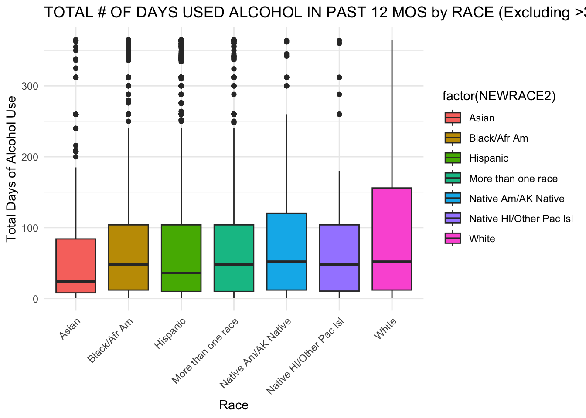
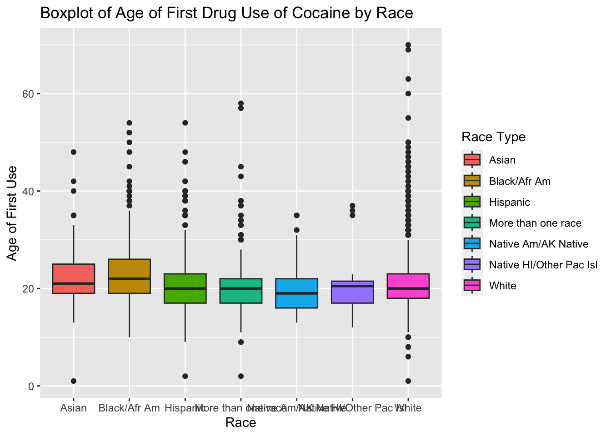
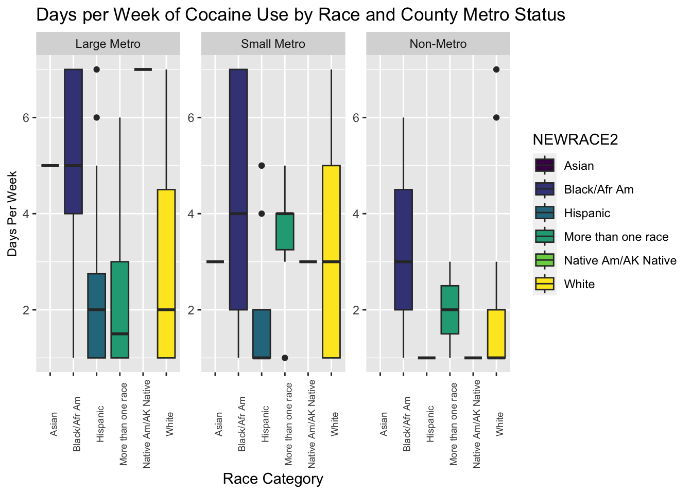
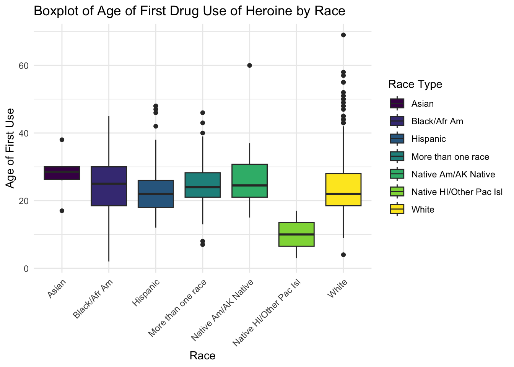

library(tidyverse)
library(broom)
library(ggplot2)
library(readr)
library(dplyr)
library(tigris)
library(ggthemes)
library(gt)
library(viridis)
cleaned_data <- readRDS(here::here("dataset/cleaned_data_new.rds"))
counties_cleaned_METRO <- readRDS(here::here("dataset/metro_clean.rds"))Analysis
Here we provide a detailed analysis using more sophisticated statistics techniques for drug use.
Early Insights
Motivation for Data Analysis (DA)
Our motivation for engaging in Data Analysis of the NSDUH survey comes from our shared interest in finding out how drug use affects all areas of life in society. Understanding more about what motivates drug use is important because so much is unknown about drug use and being able to uncover certain relationships concerning the factors that influence drug use may be key in understanding and addressing drug use. For us, we were super excited to explore such a huge dataset such as the NSDUH because we can take our time to explore the small key relationships between so many different variables throughout the dataset. Navigating through such a dataset meant that it took us a long time to find variables that we needed for analysis but it was perfect in the end because we were able to effectively show key relationships that help the general public understand more about certain drugs and their use.
Ultimately our goal is to provide key insights into how certain factors play a role in a person’s drug use even if they tried a drug once. We were initially interested in finding out just about how race and drug use is affecting one another but we then soon realized that we also need to explore all of the factors that influence drug use, not just its relationship with race. We then realized that a more holistic view of each factor into drug use would be more appropriate. The added factors of income and location can play a role in how drug use and race correlate and associate together.
Interested Variables
To narrow down the results of our findings, we focused on investigating cocaine, crack, and heroine use. We were highly interested in exploring the relationship between the use of those three drugs and the races of the respondents in this survey. Being able to see the variables that factor into the relationship is important to understand how a person might be influenced to try and do drugs. The most important variables and factors in this study will help determine not only such a relationship of race and drug use but also the disparities between racial groups and drug use.
We wanted to see what factors attribute to drug use in any way, such as income, location. The influences of income and location are important relationships to explore because they could provide insight into why or how someone could be introduced to drug use and what factors play a role. For example, does a person living in a large metro area make them more or less likely to use a drug? We want to test which of the aforementioned factors are better predictors of drug use, we then want to compare those as predictors versus race as a predictor. Many factors could influence drug use such that two factors are reliant on each other and we want to see which are the most important, or influential, factors.
We also wanted to see at what age each person has done any of the respective substances and whether they continue to do those drugs or not. Income, age, and location are important factors when it comes to finding the factors as these can be associated with higher drug use or lower as well. We want to explore relationships like if you are younger will you be trying more drugs or will you try more drugs when you are older and how does the racial group aspect play a role. Age can also play along with income and location and it’s important to explore whether these factors intertwine with each other or are they stand alone. We aim to answer these questions and relationships below in the analysis.
Questions for Analysis
The questions we are interested in answering and have attempted to answer via analyses of this data are as follows: How does race affect a person’s tendency to use crack, cocaine, and heroine? Going further, how do location, age, and income factor into this relationship?
Analysis Portion
Necessary Libraries and Datasets
Below we start by first introducing the cleaned dataset and also the libraries that are needed to create plots and tables in a nice and aesthetically pleasing fashion.
Context
Its important to set the scene in a sense for what is to come in this data analysis and understanding the features of the respondents is key. Features such as metro status in the US so that we can have a baseline understanding of where respondents can be located for drug use is significant in understanding. The same applies for understanding the percentage of respondents because of limitations of this dataset. Setting this background is important for understanding our interpretation.
Maps of How Respondents Are Sorted Across the US According to County Metropolitan Size Status
metro_map <- counties_cleaned_METRO |> filter(STUSPS != "AK", STUSPS != "HI", STUSPS != "MP", STUSPS != "AS", STUSPS != "PR", STUSPS != "GU", STUSPS != "VI") |>
ggplot() + geom_sf(aes(fill = metrostatus), alpha = 0.5) + scale_fill_viridis_c() +
ggtitle("US Counties Colored by Metro Status") + labs(subtitle = "1 = Large Metro, 2 = Small Metro, 3 = Non-Metro, 0 = Unkown", fill = "Metro Status") +
theme(plot.subtitle = element_text(size = 9))
metro_map
Starting off our analysis, we set the scene with a map representing the types of counties and areas the NSDUH survey respondents are located in. This map was made based on the dataset’s “COUTYP4” variable that sorts the respondents’ locations into three types of counties: large metro, small metro, non-metro, or unknown. As we have made both boxplots and logistic regression models based on the locations and metro county status of the respondents, we were interested in visualizing where these county types are in the USA. This helps set the scene for our further analysis since we can track the regions of the US that these counties are in and we can see how many counties are classified into each type.
Proportion of Race to Try Drugs Based on Race
It’s important to understand not only how many respondents were in this survey but also what percentage of respondents within their respective race have tried any of the 3 drugs mentioned. The reason it is very important to understand the percentage with respect to their race is because in this survey, there was not an equally sized population for each race and some people from a certain race responded more than other people in other races. This can cause representation problems and skews in the dataset so understanding the need for this plot is very important when considering the analysis below.
drug_use_with_race <- cleaned_data |>
select(NEWRACE2, cocever, cocage, crkever, crkage, herever, herage, income, COUTYP4) |>
mutate(drug_use = ifelse( cocever==1 | crkever==1 | herever==1, 1, 0))
proportions_table <- drug_use_with_race |>
group_by(NEWRACE2) |>
summarize(percent_try_drugs = 100*(mean(drug_use)),
percent_do_not = 100 - percent_try_drugs) |>
pivot_longer(cols = starts_with("percent"), names_to = "Drug_Status", values_to = "Percentage")
# Create a bar plot
ggplot(proportions_table, aes(x = NEWRACE2, y = Percentage, fill = Drug_Status)) +
geom_bar(stat = "identity", position = "stack") +
scale_fill_viridis_d() +
labs(title = "Percentage of People Who Tried/Did Not Try One of the Three Drugs by Race",
x = "Race",
y = "Percentage",
fill = "Drug Status") + theme(axis.text.x = element_text(angle = 90, size = 9))
The plot clearly shows that many people have not tried any of the three drugs but Asians have the lowest percentage of people who tried drugs for their respective race group. Native Americans are the race group with the highest percentage of drugs tried and the White race group is in the middle of the rest of the race groups. Asians, Blacks/African Americans, and Hispanics have the lowest percentage of people within their race group that have not tried any of these drugs. This gives us more insight into how our analysis will play out with our plots and models. We can predict that the model may be more accurate in understanding and predicting drug use based on such a predictor variable.
Keeping both the metro area and the percentage of people who tried drugs by race for this survey in mind, we have set the scene for how this survey’s information will play out.
Plot of Cocaine Use Out of Days per Week by Race Faceted by Metro Status
Further in our initial exploratory analysis, we made a boxplot that describes the number of days per week people in each race category use cocaine. The plot is faceted by county metro status to allow for an easy comparison of the weekly cocaine use in each county type. From this plot, we can draw conclusions not only about the counties that use the most cocaine per week, but also the race categories that tend to use the most cocaine. The large metro counties have the highest median weekly cocaine use, while the non-metro counties use cocaine the least on average.
facet.labs <- c("Large Metro", "Small Metro", "Non-Metro")
names(facet.labs) <- c("1", "2", "3")
cleaned_data |>
filter(ccdaypwk < 85) |>
group_by(NEWRACE2) |>
ggplot(aes(x = NEWRACE2, y = ccdaypwk, fill = NEWRACE2)) +
scale_fill_viridis_d() +
geom_boxplot() +
facet_wrap(vars(COUTYP4), labeller = labeller(COUTYP4 = facet.labs), scales = "free_y") +
theme(axis.text.x = element_text(angle = 90, size = 7)) +
labs(title = "Days per Week of Cocaine Use by Race and County Metro Status", x = "Race Category", y = "Days Per Week") +
theme(axis.title.y = element_text(size = 9)) 
Across all three county metro classifications, the race group that used the most cocaine per week was the Black/African American group. The other groups had more variety, so it is hard to identify the next highest cocaine using group. The plot explains this variety, however, and we can say that county metro status likely does play a role in weekly cocaine use frequency. This relationship is later supported in our analysis via a logistic regression model. We can see from this box plot that white people in small metro areas tend to use more cocaine than white people in large or non-metro areas. The “more than one race” race category follows this trend as well, with people in that category using more cocaine in small metro areas than in the other two areas. These groups diverge from the other race categories, who trend towards using less and less cocaine going from large to non-metro areas. These observations raise several interesting questions concerning the average income by race, the general access to, and interest in cocaine in each of these counties, which would be interesting to analyze further in a future study.
Plots for Race and Age when First Tried and Drug Used
Below are box plots to indicate the age at which people started using crack and heroine for the first time by race.
drug_race_age <- cleaned_data |>
select(NEWRACE2, cigever, cigage, mjever, mjage, alcever, alctry, cocever, cocage, crkever, crkage, herever, herage)
crack_data <- drug_race_age |>
filter(crkage < 86)
ggplot(crack_data, aes(x = NEWRACE2, y = crkage, fill = NEWRACE2)) +
geom_boxplot() +
scale_fill_viridis_d() +
labs(title = "Boxplot of Age of First Drug Use of Crack by Race",
x = "Race",
y = "Age of First Use",
fill = "Race Type") +
theme_minimal() +
theme(axis.text.x = element_text(angle = 45, hjust = 1)) 
The boxplot seems to indicate that there is a wide spread of ages for each race group respectively for when they first tried crack. Asian and Black/African American race groups seem to try crack later in their lives compared to other race groups on average. The spread for White and Black/African American race groups seem to be the highest out of all the other race groups as well. Hispanic, Native American, and Native Pacific Island race groups have a tigher spread compared to the others. All the race groups first try crack on average around the late teens to early 20s range if they were to use.
her_data <- drug_race_age |>
filter(herage < 86)
ggplot(her_data, aes(x = NEWRACE2, y = herage, fill = NEWRACE2)) +
geom_boxplot() +
scale_fill_viridis_d() +
labs(title = "Boxplot of Age of First Drug Use of Heroine by Race",
x = "Race",
y = "Age of First Use",
fill = "Race Type") +
theme_minimal() +
theme(axis.text.x = element_text(angle = 45, hjust = 1)) 
The boxplot above for age of first time heroine use indicates key differences between many of the race groups. The white race group has the most variability compared to the other race groups which would be interesting to explore what is causing people in the white race group to try heroine later in their lives. The average age seems to vary between the race groups compared to crack which is something that can be explored very early on. Something interesting that comes up is that on average the Native Pacific Island groups try heroine when they are around 10 years old which is super interesting to go into.
This gives us insight that these race groups have differences between one another that can be explored further with what might be affecting the age that people try crack or heroine, whether its income, location or anything else.
Logistic Regression Models
Setting Background and Understanding Choice
Several models were created and then assessed for their usefulness and quality. We tried several different predictors in these models to inform how location or income factor, along with race, into a person’s tendency to use drugs. Out of five original models, we took a few things into consideration when deciding which to keep, such as looking at how many values in the model were significant based on their p-values. Many of the models were great, and had similar amounts of significant values, so to narrow down our selection we then looked at the AIC of each model and compared them. A smaller AIC implies a higher quality model. Overall, the AIC values between each model did not vary too much, so we were also able to simply choose models based on which provided the most interesting results to discuss and to support our thesis.
Important to note that the baselines/intercepts are the Asian Population for the other variables to baseline and compare to. The reason we chose Asian race group to be the baseline because they had the lower proportion of people doing these 3 drugs so it would be easier to compare the rest to them.We are gonna assume for the model here that the hypothesis is that there is no association between likelihood of trying drugs ever and race group as well as income. To understand what factor(income)1,2,3 or 4, the following is their associated values in the survey: 1:Less than 20,000, 2: 20,000 - 49,999, 3: 50,000 - 74,999, 4: 75,000 or More. These numbers are for American Dollars as well. To understand what factor(COUTYP4)1,2,3 is the following key is important: 1: Non-Metro, 2: Small-Metro, 3: Large-Metro.
Substance Use with Race
The first model to be explored is whether Race alone is a significant enough of a predictor alone to predict drug use of the three drugs.
# Model for the Substance Use vs Race
model_sub <- glm(drug_use ~ NEWRACE2, data = drug_use_with_race, family = "binomial")
tidy_output <- tidy(model_sub)|>
mutate(term = ifelse(term == "(Intercept)", "Asian", str_replace(term, "NEWRACE2", "")))
conf_intervals <- confint(model_sub)
odds_ratios <- exp(coef(model_sub))
odds_ratios_df <- data.frame(
Odds_Ratio = odds_ratios
)
output_table <- cbind(tidy_output, conf_intervals,odds_ratios_df) |>
rename(Race = term) |>
select(-statistic,-std.error) |>
rownames_to_column(var = "RowNames") |>
select(-RowNames)
output <- output_table |>
gt() |>
as_raw_html()
output| Race | estimate | p.value | 2.5 % | 97.5 % | Odds_Ratio |
|---|---|---|---|---|---|
Based on the results of the model, we can see a couple of things. First being that all the races have a significantly statistical value for the p value which is very important to note. There is also the coefficient estimates for race variables, which indicates that the Asian race (-3.1570003) is the baseline for the other races to be compared too. Black/African American race group has a odds ratio of 1.4662043 indicating that it is positive and thus tend to be associated with drug use that is higher than that of the Asian race group which is used as the baseline. A positive odds ratio is seen for all the race groups. The p-values as mentioned earlier are all significant and therefore this model lets us say that we have race group as a significant predictor for finding whether the person used drugs or not.
Substance Use with Race and Income
The second model to be explored is whether Race and Income is a significant enough of predictors to predict drug use of the three drugs. The predictors Race and Income do not effect each other in this model.
# Model for the Substance Use vs Race and Income
model_sub_income <- glm(drug_use ~ NEWRACE2+factor(income) , data = drug_use_with_race, family = "binomial")
tidy_output_income <- tidy(model_sub_income)|>
mutate(term = ifelse(term == "(Intercept)", "Asian", str_replace(term, "NEWRACE2", "")))
conf_intervals_income <- confint(model_sub_income)
odds_ratios_income <- exp(coef(model_sub_income))
output_table <- cbind(tidy_output_income,conf_intervals_income, odds_ratios_income) |>
select(-statistic,-std.error) |>
rownames_to_column(var = "RowNames") |>
select(-RowNames)
output <- output_table |>
gt() |>
as_raw_html()
output| term | estimate | p.value | 2.5 % | 97.5 % | odds_ratios_income |
|---|---|---|---|---|---|
This statistical output for this logistic regression model contains some important information for the income and race vs drug. The coefficient estimates for race variables, which indicates that the Asian race (-2.7946504) have the lower odds of the outcome compared to the baseline race, and the odds ratio (0.06113625) shows that about 6.1% of the baseline group’s odds, after controlling for other factors in the model. The other races, all with the positive coefficient and odds ratio, suggest that a higher odds of drug use. In this case, the Native Am/AK Native group contains the highest coefficient (1.584202) as well as the odds ratio (4.87539938), which is significantly higher drug use. For the income factors contains the negative coefficient and odds ration less than 1, suggesting a trend of lower drug use with higher income levels. From the section of the p values, with all below 0.05 indicating the associations are statistically significant. Furthermore, the output of the 95% confidence intervals, the result of the Native HI/Other Pac Isl is slightly cross the line of no difference while the others are not crossing 1, also indicate the significance. In general, this model has identified meaningful predictors for the outcome variable. We can assume based of this that income plays a role in predicting drug use as well.
Substance Use with Race and Location as a Factor of Each Other
The third model to be explored is whether Race and Location is a significant enough of predictors to predict drug use of the three drugs. The predictors Race and Location do not effect each other in this model.
# Model for the Substance Use vs Race and Location
model_sub_loc <- glm(drug_use ~ NEWRACE2*factor(COUTYP4), data = drug_use_with_race, family = "binomial")
tidy_output_loc <- tidy(model_sub_loc)|>
mutate(term = ifelse(term == "(Intercept)", "Asian", str_replace(term, "NEWRACE2", "")))
conf_intervals_loc <- confint(model_sub_loc)
odds_ratios_loc <- exp(coef(model_sub_loc))
output_table <- cbind(tidy_output_loc,conf_intervals_loc, odds_ratios_loc) |>
select(-statistic,-std.error) |>
rownames_to_column(var = "RowNames") |>
select(-RowNames)
output <- output_table |>
gt() |>
as_raw_html()
output| term | estimate | p.value | 2.5 % | 97.5 % | odds_ratios_loc |
|---|---|---|---|---|---|
This last model also quite interesting relationships between race, location to drug use. As spoken about earlier, the race predictor variable is very good at predicting drug use but when taking into account location, things change a bit. This model takes into account when race and location are factored together. The model shows p values for all the races and the locations and that locations seems to be not statistically significant but close for a Small-Metro area and significant for Non-Metro areas for predicting drug use. When the two are shown together, there are many that have small p-values but not small enough for the 0.05 threshold to be significant. However some variables such as White and Non metro showed a significant p-value and estimates that indicate they were less likely to do drugs than the baseline, which includes Asians and Large Metro. It showed that locations with less people like Non-Metros can be seen to be associated with lower drug use compared to the baseline. In total however, this model is very good at showing that it is not enough to simply put location coded by Large Metro, Small Metro and No Metro and Race together as they seem to have mixed relationships but the p-values are small enough that if we were to have more data available we could make a more defined claim. Therefore, Location and Race are good predictors that have room for improvement.
Final Statements
Conclusion
With our study, we aimed to investigate the factors that influence cocaine, crack, and heroin use in the USA. We were successful in uncovering relationships between substance abuse, location, income, and age. We found that on average, people try crack at a younger age than they try heroin. In terms of income, we found, via logistic regression, that people with a lower annual income tend to use more drugs than those with higher incomes, a trend that was consistent across most racial groups. For the location relation, we saw via logistic regression and boxplots that people in large metro areas use the most drugs on average, but this trend was not consistent across all race categories. We found that white people and people of more than one race in small metro areas use more drugs than people of the same race categories in other areas. Our study has provided valuable insight into the influence of a variety of demographics on drug use. Cocaine, crack, and heroin are very dangerous drugs and understanding why a person may be more or less inclined to use them is vital in addressing the issues with drug use in the US. We believe that this study would be an excellent support for a future complementary study that dives further into how the factors we have investigated come to affect drug use. We would be interested in further studying how the factors we have identified affect someone’s access to these drugs as the access to drugs is a variable not covered in this survey.
Limitations of Analysis
While our analysis has provided significant findings and we have shown via statistical modeling that there is strong correlation between our variables of interest, there are some flaws and limitations to consider when assessing the results of our study. First, the survey asks the respondent to report on their drug use, race, location, age, and more. Their responses to questions concerning the latter variables need not be taken into question. However, their responses to questions concerning their drug use should be taken with a grain of salt because their responses are based on their memory. This means that they may falsely report on their drug use history which introduces error into our findings. Another limitation we must take into account are the proportions of the number of respondents from each race to the total number of survey respondents. More respondents come from the white race category than from any other race category, so this introduces skew into our results. For example, if we simply said “more white people use cocaine than any other race category”, this may or may not be true because more white people responded to the survey than any people of any other race. To address and minimize this location, we created a plot that uses population proportions in an analysis of drug use frequency. See the section “Proportion of Race to Try Drugs Based on Race”.
Need for Further Analysis
Based on the boxplots that compare the ages when people first tried crack versus heroin, a data analysis concerning the accessibility of crack versus heroine to younger people would be an interesting complementary study to further investigate the trend of people trying crack at a younger age than cocaine. This study could look at how people acquire crack versus cocaine, the median cost of either drug, the average interest of younger versus older people in using crack or cocaine, and the access of those groups to mental health resources between the ages of 18 to 30, which are the approximate median ages of first use of crack and heroine, respectively. We would also be interested in exploring what percentage of their annual income people spend on drugs and how race, location, age, and access to mental health resources may factor into that spending. We also believe that we could understand, specifically the location portion of this survey, better, if we knew more about how people gained access to each of these drugs. Knowing the volume of drug dealers or other sources of drug access in each county, or even just in each state, would be great supporting knowledge to our study.
We can also expand the analysis to include data on specific location which is made private by SAMHSA for the NSDUH to understand which areas may be more prone to drug use than other areas for people. Another way to go even further is to specify the income amount to the dollar if possible and not ranges so we can apply linear regression models to get an even better sense of what is going on with drug use factors. We can even go further to include even more factors such as family history, mental health, etc. These all would add significant detail and explore new relationships that can be talked about further in other research.
Attributions/Helpful Links
- https://towardsdatascience.com/simply-explained-logistic-regression-with-example-in-r-b919acb1d6b3 - Understanding Logistic Regression
- https://www.ncbi.nlm.nih.gov/pmc/articles/PMC2821675/ - an analysis on crack, cocaine, and methamphetamine use
- https://www.rdocumentation.org/packages/tigris/versions/2.0.4 - how to use the tigris package
- https://www.ncbi.nlm.nih.gov/pmc/articles/PMC6941412/ - study on drug use in the African American race group
- https://www.datafiles.samhsa.gov/sites/default/files/field-uploads-protected/studies/NSDUH-2021/NSDUH-2021-datasets/NSDUH-2021-DS0001/NSDUH-2021-DS0001-info/NSDUH-2021-DS0001-info-codebook.pdf - link to codebook describing the variables in the NSDUH survey